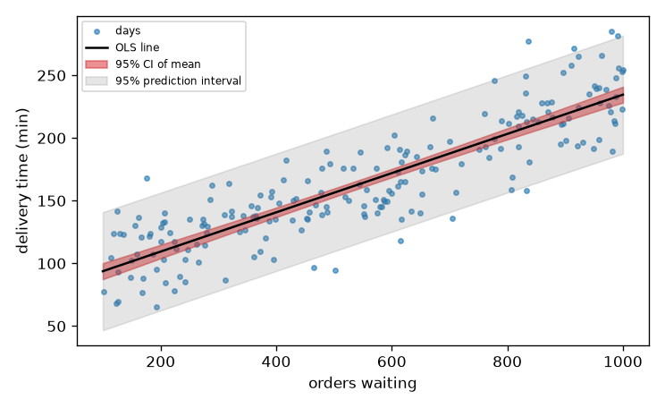
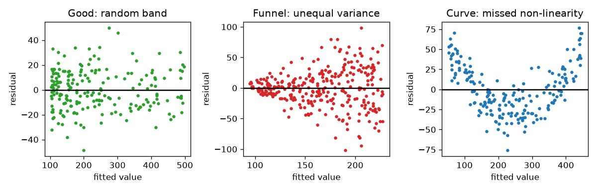

Your manager asks, "If we expect 800 orders waiting at the depot on Friday, what delivery time should we promise customers, and which factor matters most: the number of orders, the distance or the express courier option?" Linear regression is the tool that answers both questions at once. It gives you a prediction, an effect for each factor (in minutes per unit), an uncertainty for each number, and a set of diagnostic checks that tell you when the model is lying. You already know regression as a machine-learning model (the Math PDF, Pillar 2 and Pillar 5, covered gradients and loss functions). Here we treat it as a statistical model: we derive the OLS formula, compute standard errors and tests by hand, check the assumptions, find influential points, detect collinearity, and learn what the coefficients really mean. By the end you will be able to explain every number in a regression table, which is exactly what interviewers and stakeholders ask.
Since the library statsmodels is not installed in our environment, we build everything in NumPy so you see inside the box. The statsmodels equivalent (sm.OLS(y, X).fit().summary()) is shown at the end of the chapter as "not run here"; it reports the same numbers.
| Word | Plain meaning | Example |
|---|---|---|
| Response (y) | What you predict | Delivery time in min |
| Predictor (x) | What you use to predict | Orders waiting |
| Intercept β₀ | Predicted y when x = 0 | Delivery time with no orders waiting |
| Slope β₁ | Change in predicted y for 1 more unit of x | min per extra user |
| Fitted value ŷ | The model's prediction for a point | |
| Residual e | y − ŷ: what the line misses | |
| SSE | Sum of squared residuals Σe² | The quantity OLS minimises |
| R² | 1 − SSE/SST, share of variance explained | 0.6 |
The model is y = β₀ + β₁x + ε. The ε (epsilon) is random noise. In matrix form, with one row per observation and a column of ones for the intercept: y = Xβ + ε.
OLS chooses β to minimise SSE(β) = (y − Xβ)ᵀ(y − Xβ).
−2 Xᵀ(y − Xβ).Xᵀ(y − Xβ) = 0, giving the normal equations XᵀX β = Xᵀy.β̂ = (XᵀX)⁻¹ Xᵀ y.For one predictor this reduces to β̂₁ = Sxy / Sxx and β̂₀ = ȳ − β̂₁ x̄, where Sxy = Σ(x − x̄)(y − ȳ) and Sxx = Σ(x − x̄)².
Geometry (picture it as a shadow): the vector y lives in n-dimensional space. The columns of X span a flat sheet (a subspace). The fitted vector ŷ = Xβ̂ is the shadow (orthogonal projection) of y on that sheet, and the residual vector is the part sticking out at a right angle. That is why Xᵀe = 0: residuals are orthogonal to every predictor.
Under the standard assumptions (Section 6.3) the variance of the estimate is Var(β̂) = σ² (XᵀX)⁻¹, estimated with s² = SSE / (n − p), where p is the number of coefficients. The Math PDF (Pillar 2) showed the same minimisation through gradient descent. The normal equation is the one-step shortcut.
| Item | Example value | Where it appears in the job |
|---|---|---|
| Slope β₁ | 0.6 min per order | Planning: cost of one more waiting order |
| R² | 0.60 | How much of the variation the model explains |
| s (residual SE) | 0.89 min | Typical prediction error |
Problem 6.1.1 (five points, every number by hand) x = 1, 2, 3, 4, 5 (load in hundreds of orders) and y = 2, 4, 5, 4, 5 (delivery time in tens of min). Find the OLS line, R², the SE of the slope, its t statistic and p-value.
| Formula | β̂₁ = Sxy/Sxx; β̂₀ = ȳ − β̂₁x̄; s² = SSE/(n−2); SE(β̂₁) = √(s²/Sxx); t = β̂₁/SE |
|---|---|
| Plug in | x̄ = 3, ȳ = 4. Sxy = (−2)(−2) + (−1)(0) + (0)(1) + (1)(0) + (2)(1) = 4 + 0 + 0 + 0 + 2 = 6. Sxx = 4 + 1 + 0 + 1 + 4 = 10. |
| Compute | β̂₁ = 6/10 = 0.6. β̂₀ = 4 − 0.6 × 3 = 2.2. Fitted: 2.8, 3.4, 4.0, 4.6, 5.2. Residuals: −0.8, 0.6, 1.0, −0.6, −0.2. SSE = 0.64 + 0.36 + 1.0 + 0.36 + 0.04 = 2.4. SST = Σ(y − ȳ)² = 4 + 0 + 1 + 0 + 1 = 6. R² = 1 − 2.4/6 = 0.6. s² = 2.4/3 = 0.8. SE = √(0.8/10) = 0.283. t = 0.6/0.283 = 2.12 with 3 df, p = 0.124. |
| Answer | The line is ŷ = 2.2 + 0.6x: each extra 100 orders adds 6 min on average. The line explains 60 percent of the variance, but with only 5 points the slope is not statistically significant (p = 0.12). |
| Check | The residuals add to zero: −0.8 + 0.6 + 1.0 − 0.6 − 0.2 = 0. They are orthogonal to x: Σ x·e = −0.8 + 1.2 + 3.0 − 2.4 − 1.0 = 0. The code confirms both. |
| Why it matters | A decent R² with 5 points proves little. Always look at the standard error and the interval, not only at the slope. |
Predict: will X.T @ e print exactly zero?
import numpy as np
from scipy import stats
x = np.array([1, 2, 3, 4, 5.0]); y = np.array([2, 4, 5, 4, 5.0])
X = np.column_stack([np.ones_like(x), x])
beta = np.linalg.solve(X.T @ X, X.T @ y) # normal equations
e = y - X @ beta
n, p = X.shape
s2 = e @ e / (n - p)
cov = s2 * np.linalg.inv(X.T @ X)
se = np.sqrt(np.diag(cov)); t = beta / se
print("beta:", beta, " SSE:", round(e @ e, 3), " R2:", round(1 - e @ e / ((y - y.mean()) ** 2).sum(), 3))
print("SE:", np.round(se, 4), " t:", np.round(t, 3), " p:", np.round(2 * stats.t.sf(abs(t), n - p), 4))
print("X'e (should be ~0):", np.round(X.T @ e, 12))
print("lstsq check:", np.linalg.lstsq(X, y, rcond=None)[0])beta: [2.2 0.6] SSE: 2.4 R2: 0.6
SE: [0.9381 0.2828] t: [2.345 2.121] p: [0.1007 0.124 ]
X'e (should be ~0): [0. 0.]
lstsq check: [2.2 0.6]Line by line: np.linalg.solve(XtX, Xty) solves the normal equations without forming the inverse (more stable). X.T @ e is the orthogonality check. In real code prefer np.linalg.lstsq (or QR), which stays accurate even when columns are nearly collinear.
Problem 6.1.2 (a realistic dataset: delivery time versus orders) We simulate 200 delivery days where delivery time = 80 + 0.15 × orders + noise (SD 25). Fit the line, interpret the slope, and report the 95 percent CI, R² and the residual standard error. Then make a prediction for 800 orders with both a confidence interval (for the mean delivery time at 800 orders) and a prediction interval (for one new run).
| Formula | CI for mean: ŷ₀ ± t* · s √(x₀ᵀ(XᵀX)⁻¹x₀). Prediction interval: ŷ₀ ± t* · s √(1 + x₀ᵀ(XᵀX)⁻¹x₀). |
|---|---|
| Plug in | x₀ = (1, 800) |
| Compute | The code builds a reusable function ols() that we will use for the rest of the chapter. |
| Answer | The fitted slope is 0.156 min per order (about 15.6 min per extra 100 orders, true value 0.15) with a 95 percent CI of (0.144, 0.168), which contains the truth. The prediction at 800 orders is 203.3 min. The interval for the mean at 800 orders is narrow (±4.4 min) while the prediction interval for a single run is wide (about ±47 min), because single days carry the full noise SD. |
| Check | The true mean at 800 orders is 80 + 0.15 × 800 = 200 min. The CI 203.3 ± 4.4 = (198.9, 207.7) contains 200. |
| Why it matters | Stakeholders usually want the prediction interval ("how long will tomorrow's delivery take?"), not the CI for the mean. Mixing them up is a very common error. |
def ols(X, y, names=None):
X = np.asarray(X, float); y = np.asarray(y, float)
n, p = X.shape
XtXi = np.linalg.inv(X.T @ X)
beta = XtXi @ X.T @ y
fit = X @ beta; e = y - fit
sse = e @ e; sst = ((y - y.mean()) ** 2).sum()
s2 = sse / (n - p)
se = np.sqrt(s2 * np.diag(XtXi))
t = beta / se; pv = 2 * stats.t.sf(abs(t), n - p)
h = np.einsum("ij,jk,ik->i", X, XtXi, X) # leverage = diag of hat matrix
r2 = 1 - sse / sst; adj = 1 - (1 - r2) * (n - 1) / (n - p)
F = ((sst - sse) / (p - 1)) / s2; pF = stats.f.sf(F, p - 1, n - p)
cooks = e**2 / (p * s2) * h / (1 - h) ** 2
return dict(beta=beta, se=se, t=t, p=pv, resid=e, fitted=fit, h=h, r2=r2, adj=adj, F=F, pF=pF,
s=np.sqrt(s2), n=n, k=p, cooks=cooks, XtXi=XtXi, sse=sse, names=names)
def show(m):
print(f"{'term':12}{'coef':>10}{'se':>9}{'t':>8}{'p':>10}")
for nm, b, s_, t_, p_ in zip(m["names"], m["beta"], m["se"], m["t"], m["p"]):
print(f"{nm:12}{b:10.4f}{s_:9.4f}{t_:8.2f}{p_:10.4f}")
print(f"R2={m['r2']:.4f} adjR2={m['adj']:.4f} F={m['F']:.1f} (p={m['pF']:.2e}) resid SE={m['s']:.2f} n={m['n']}")
rng = np.random.default_rng(60)
n = 200
orders = rng.uniform(100, 1000, n)
dmin = 80 + 0.15 * orders + rng.normal(0, 25, n)
X1 = np.column_stack([np.ones(n), orders])
m1 = ols(X1, dmin, ["intercept", "orders"])
show(m1)
tcrit = stats.t.ppf(0.975, n - 2)
print("95%% CI slope: (%.4f, %.4f)" % (m1["beta"][1] - tcrit * m1["se"][1], m1["beta"][1] + tcrit * m1["se"][1]))
x0 = np.array([1, 800.0]); yhat0 = x0 @ m1["beta"]; q = x0 @ m1["XtXi"] @ x0
print("prediction at 800 orders: %.1f min" % yhat0)
print("CI for the mean : +/- %.1f" % (tcrit * m1["s"] * np.sqrt(q)))
print("prediction interval: +/- %.1f" % (tcrit * m1["s"] * np.sqrt(1 + q)))term coef se t p
intercept 78.1250 3.7600 20.78 0.0000
orders 0.1564 0.0061 25.71 0.0000
R2=0.7695 adjR2=0.7684 F=661.2 (p=5.07e-65) resid SE=23.65 n=200
95% CI slope: (0.1444, 0.1684)
prediction at 800 orders: 203.3 min
CI for the mean : +/- 4.4
prediction interval: +/- 46.8# plot
import matplotlib.pyplot as plt
fig, ax = plt.subplots(figsize=(6.2, 3.8))
ax.scatter(orders, dmin, s=10, alpha=.6, color="#1f77b4", label="days")
xs = np.linspace(100, 1000, 100)
Xs = np.column_stack([np.ones(100), xs]); ys = Xs @ m1["beta"]
sem = m1["s"] * np.sqrt(np.einsum("ij,jk,ik->i", Xs, m1["XtXi"], Xs))
sep = m1["s"] * np.sqrt(1 + np.einsum("ij,jk,ik->i", Xs, m1["XtXi"], Xs))
ax.plot(xs, ys, color="k", label="OLS line")
ax.fill_between(xs, ys - tcrit * sem, ys + tcrit * sem, color="#d62728", alpha=.5, label="95% CI of mean")
ax.fill_between(xs, ys - tcrit * sep, ys + tcrit * sep, color="gray", alpha=.2, label="95% prediction interval")
ax.set_xlabel("orders waiting"); ax.set_ylabel("delivery time (min)"); ax.legend(fontsize=7)
plt.tight_layout(); plt.savefig(f"{IMG}/ch06_fit.png", dpi=120); plt.close()
How to read it: each blue dot is one delivery day. The black line is the OLS fit. The narrow red band is the confidence interval for the average delivery time at each order level; it is narrowest in the middle of the data (where we know most) and fans out at the edges. The wide grey band is the prediction interval for a single new run; about 95 percent of dots fall inside it.
Regression is the first model to try for any numeric target: capacity forecasts, cost models, sales drivers. The coefficient is an effect size in natural units (min per order), which is why regression is the workhorse of analytics reporting.
Check yourself
Xᵀe = 0 mean geometrically? Answer: The residual vector is perpendicular to the space spanned by the predictors.| Word | Plain meaning | Example |
|---|---|---|
| Partial effect | Effect of one predictor with the others held constant | min per order, at fixed distance |
| Dummy (indicator) variable | 0/1 column for a category | express = 1 |
| Adjusted R² | R² penalised for the number of predictors | |
| F-test (overall) | H₀: all slopes are zero | |
| t-test on a coefficient | H₀: this slope is zero, others kept in the model | |
| Degrees of freedom | n − p, with p the number of coefficients | 196 |
β̂ = (XᵀX)⁻¹Xᵀy, with more columns in X.t_j = β̂_j / SE(β̂_j) with n − p df.F = [(SST − SSE)/(p − 1)] / [SSE/(n − p)].Adjusted R² = 1 − (1 − R²)(n − 1)/(n − p). Plain R² never decreases when you add a variable (even a useless one); adjusted R² can.F = [(SSE_small − SSE_big)/q] / [SSE_big/(n − p_big)], where q is the number of extra variables.log(y) = β₀ + β₁x, one unit of x changes y by about 100·β₁ percent (when β₁ is small). In log(y) = β₀ + β₁ log(x), β₁ is an elasticity: a 1 percent change in x gives a β₁ percent change in y.| Item | Example value | Where it appears in the job |
|---|---|---|
| Coefficient for distance | 0.8 min per km | Which factor matters most |
| Dummy for express courier | −40 min | Effect of a categorical factor |
| Adjusted R² | 0.90 | Compare models of different size |
Problem 6.2.1 (three predictors) Simulate 200 days. Delivery time = 80 + 0.15 × orders + 0.8 × distance_km − 40 × express + noise (SD 25). Fit the model, read the table, check the overall F-test and compare R² with adjusted R². Then add a pure-noise column and see what happens to R² and adjusted R².
| Formula | β̂ = (XᵀX)⁻¹Xᵀy; adj R² = 1 − (1−R²)(n−1)/(n−p) |
|---|---|
| Plug in | n = 200, p = 4 (intercept + 3 predictors), then p = 5 with the noise column |
| Compute | The code prints both tables. |
| Answer | Estimated coefficients are close to the truth: orders 0.138 (true 0.15), distance 0.75 (true 0.8), express −43.1 min (true −40). The overall F-test is overwhelming (F = 241.7). Adding a pure-noise column raises R² from 0.7872 to 0.7904 (as it always does). Here adjusted R² also rose slightly (0.7840 to 0.7861) because the noise column happened to get t = 1.73: adjusted R² rises whenever |t| > 1, and a pure-noise column reaches |t| > 1 about one time in three. Its p-value (0.086) is not significant. So adjusted R² is a gentle penalty, not a strict test; the t-test or AIC (Chapter 7) is stricter. |
| Check | True values are known, so compare. Each estimate should be within about 2 standard errors of the truth: orders is 1.9 SE below, distance 0.5 SE, express 0.9 SE away. |
| Why it matters | The coefficient on express ("−40 min") is the clean estimate of the benefit of the express courier option holding order volume and distance fixed, which is the number the operations team wants. |
rng = np.random.default_rng(61)
n = 200
orders = rng.uniform(100, 1000, n)
distance = rng.lognormal(3.0, 0.6, n) # km
express = rng.binomial(1, 0.6, n)
dmin = 80 + 0.15 * orders + 0.8 * distance - 40 * express + rng.normal(0, 25, n)
X3 = np.column_stack([np.ones(n), orders, distance, express])
m3 = ols(X3, dmin, ["intercept", "orders", "distance_km", "express"])
show(m3)
junk = rng.normal(size=n)
m4 = ols(np.column_stack([X3, junk]), dmin, ["intercept", "orders", "distance_km", "express", "noise_col"])
print("--- adding a pure-noise column ---")
show(m4)
print("R2 %.5f -> %.5f adjR2 %.5f -> %.5f" % (m3["r2"], m4["r2"], m3["adj"], m4["adj"]))term coef se t p
intercept 88.5149 5.1144 17.31 0.0000
orders 0.1381 0.0063 21.74 0.0000
distance_km 0.7505 0.0930 8.07 0.0000
express -43.0774 3.5524 -12.13 0.0000
R2=0.7872 adjR2=0.7840 F=241.7 (p=1.36e-65) resid SE=24.56 n=200
--- adding a pure-noise column ---
term coef se t p
intercept 88.9722 5.0956 17.46 0.0000
orders 0.1377 0.0063 21.78 0.0000
distance_km 0.7414 0.0927 8.00 0.0000
express -43.1175 3.5347 -12.20 0.0000
noise_col 2.8642 1.6584 1.73 0.0857
R2=0.7904 adjR2=0.7861 F=183.9 (p=5.26e-65) resid SE=24.44 n=200
R2 0.78723 -> 0.79044 adjR2 0.78397 -> 0.78614Problem 6.2.2 (nested F-test and log interpretation) (a) Test whether distance_km and express together add anything beyond orders alone using the nested F-test. (b) Fit log(delivery time) on log(orders) and interpret the elasticity.
| Formula | F = [(SSE_small − SSE_big)/q] / [SSE_big/(n − p_big)] |
|---|---|
| Plug in | small model: intercept + orders (p = 2). Big model: p = 4, so q = 2 extra variables. |
| Compute | Use the SSE values from the fits. |
| Answer | (a) F(2, 196) = 108.8 with p = 1.7e-32: distance and express matter jointly. (b) The elasticity is 0.451 (SE 0.034): a 1 percent increase in orders raises delivery time by about 0.45 percent, less than proportionally because delivery time has a fixed base of about 80 min. |
| Check | Our F-test should equal the square of the t-statistic when q = 1. We verify this with a one-variable comparison. |
| Why it matters | The nested F-test is the right tool to ask "does this group of variables help?". Elasticities are ideal for scaling arguments such as "double the orders, how much slower?". |
m_small = ols(np.column_stack([np.ones(n), orders]), dmin, ["i", "orders"])
q = 2
F = ((m_small["sse"] - m3["sse"]) / q) / (m3["sse"] / (n - 4))
print("nested F(%d,%d) = %.1f p = %.2e" % (q, n - 4, F, stats.f.sf(F, q, n - 4)))
m_cache = ols(np.column_stack([np.ones(n), orders, distance]), dmin, ["i", "u", "p"])
F1 = ((m_cache["sse"] - m3["sse"]) / 1) / (m3["sse"] / (n - 4))
print("one-variable check: F=%.2f t^2=%.2f" % (F1, m3["t"][3] ** 2))
ml = ols(np.column_stack([np.ones(n), np.log(orders)]), np.log(dmin), ["i", "log_users"])
print("elasticity of delivery time w.r.t. orders: %.3f (se %.3f)" % (ml["beta"][1], ml["se"][1]))nested F(2,196) = 108.8 p = 1.65e-32
one-variable check: F=147.05 t^2=147.05
elasticity of delivery time w.r.t. orders: 0.451 (se 0.034) delivery time
^
(express=0)| . . ./ . <- same slope on orders,
| . ./ . two parallel lines
(express=1)| . ./ . . <- shifted down by 40 min
+---------------> ordersA dummy variable moves the whole line up or down without changing the slope. (To let the slope differ, add an interaction orders × express.)
This is the "driver analysis" at the centre of many analytics projects. In an interview you will be asked to interpret a coefficient table, to explain "holding other variables constant", and to say why adjusted R² or a nested F-test is used.
Check yourself
What breaks when assumptions fail: non-linearity biases the estimates. Dependence and unequal variance leave the estimates unbiased but make the standard errors, p-values and intervals wrong.
LM = n × R²_aux follows χ² with (number of predictors) df under H₀ of equal variance.DW = Σ(eₜ − eₜ₋₁)² / Σeₜ²; about 2 means no autocorrelation, below 1.5 suggests positive autocorrelation.Var(β̂) = (XᵀX)⁻¹ Xᵀ diag(eᵢ²/(1 − hᵢ)²) X (XᵀX)⁻¹, which does not assume equal variance.| Item | Example value | Where it appears in the job |
|---|---|---|
| Residual vs fitted plot | Funnel shape | Delivery time noise grows with load |
| Breusch-Pagan | LM = 60, p ≈ 0 | Formal check for the funnel |
| Durbin-Watson | 0.6 | Back-to-back delivery days are correlated |
Problem 6.3.1 (heteroscedasticity and robust errors) Delivery time noise grows with load: SD = 0.05 × orders. Fit OLS of delivery time on orders. Run the Breusch-Pagan test, and compare the ordinary SE of the slope with the HC3 robust SE. Then fix the problem by regressing log(delivery time) on log(orders) and re-test.
| Formula | BP: LM = n·R² from regressing e² on x; ~ χ²(1) under H₀. HC3 as above. |
|---|---|
| Plug in | n = 300, true slope 0.15, true noise SD = 0.05 × orders (between 5 and 50 min) |
| Compute | Run the code. |
| Answer | The BP test rejects equal variance (p near 0). The slope is 0.149 (true 0.15), so it is still unbiased. The naive SE is 0.0070 and the HC3 SE is 0.0066: here they are close, because the funnel is moderate; with a stronger funnel the two can differ by a factor of two or more, and the robust one is the honest one. Working in logs reduces the funnel (the BP statistic falls from 47.3 to 13.0) but does not remove it entirely (p = 0.0003), because the noise in this simulation is not exactly proportional to the mean. |
| Check | The slope estimate should be close to the truth 0.15 in all versions. Only its uncertainty changes. |
| Why it matters | If you report a naive p-value with a funnel in the residuals, your stated confidence is wrong. Robust errors are cheap insurance, and many practitioners use them by default. |
rng = np.random.default_rng(62)
n = 300
u = rng.uniform(100, 1000, n)
y_h = 80 + 0.15 * u + rng.normal(0, 1, n) * 0.05 * u
Xh = np.column_stack([np.ones(n), u]); mh = ols(Xh, y_h, ["intercept", "orders"])
e2 = mh["resid"] ** 2
aux = ols(Xh, e2, ["i", "u"])
LM = n * aux["r2"]
print("Breusch-Pagan: LM = %.1f p = %.2e" % (LM, stats.chi2.sf(LM, 1)))
def hc3(m, X):
X = np.asarray(X, float)
meat = X.T @ (X * (m["resid"] ** 2 / (1 - m["h"]) ** 2)[:, None])
return np.sqrt(np.diag(m["XtXi"] @ meat @ m["XtXi"]))
print("slope %.4f naive SE %.4f HC3 SE %.4f" % (mh["beta"][1], mh["se"][1], hc3(mh, Xh)[1]))
ml = ols(np.column_stack([np.ones(n), np.log(u)]), np.log(np.maximum(y_h, 1)), ["i", "log_u"])
aux2 = ols(np.column_stack([np.ones(n), np.log(u)]), ml["resid"] ** 2, ["i", "x"])
print("after log-log: BP LM = %.1f p = %.1e" % (n * aux2["r2"], stats.chi2.sf(n * aux2["r2"], 1)))Breusch-Pagan: LM = 47.3 p = 6.23e-12
slope 0.1491 naive SE 0.0070 HC3 SE 0.0066
after log-log: BP LM = 13.0 p = 3.2e-04Problem 6.3.2 (non-linearity, autocorrelation and normality) (a) Generate delivery time that follows a curve (quadratic in orders), fit a straight line, and see the curved residual pattern through a correlation of residuals with orders². (b) Generate time-ordered delivery days whose noise carries over from one run to the next (AR(1) noise with coefficient 0.8), and compute Durbin-Watson. (c) Check normality of the residuals from the correct model with Shapiro-Wilk.
| Formula | DW = Σ(eₜ − eₜ₋₁)² / Σeₜ² |
|---|---|
| Plug in | (a) delivery time = 100 + 0.0004 × orders² + noise; (b) noise eₜ = 0.8 eₜ₋₁ + innovation |
| Compute | Run the code. |
| Answer | (a) Residuals from the straight line correlate at 0.83 with the centred squared term: the line misses the bend (although its R² of 0.938 still looks high!). Adding orders² brings the correlation to 0.00 and R² to 0.982. (b) Durbin-Watson is 0.51 for the AR(1) noise (strong positive autocorrelation) and 1.79 for independent noise. (c) Residuals of the correct model pass Shapiro-Wilk (p = 0.585). |
| Check | For AR(1) noise the theoretical DW is about 2(1 − 0.8) = 0.4; the sample value 0.51 is in that area. Also note the lesson in (a): a high R² (0.938) coexisted with a clearly wrong shape. |
| Why it matters | Days that follow each other share state (a backlog carried over from yesterday, tired drivers), so their errors are correlated. The standard errors you compute under "independence" are then too small. The fix is time-series modelling or averaging per week. |
rng = np.random.default_rng(63)
n = 200
u = np.sort(rng.uniform(100, 1000, n))
y_c = 100 + 0.0004 * u**2 + rng.normal(0, 15, n)
mline = ols(np.column_stack([np.ones(n), u]), y_c, ["i", "u"])
mquad = ols(np.column_stack([np.ones(n), u, u**2]), y_c, ["i", "u", "u2"])
uc2 = (u - u.mean()) ** 2 # centred square: the 'bend' term
print("line R2 %.3f; corr(resid_line, centred u^2) = %.3f" % (mline["r2"], np.corrcoef(mline["resid"], uc2)[0, 1]))
print("quad R2 %.3f; corr(resid_quad, centred u^2) = %.3f; coef on u^2 = %.6f" % (mquad["r2"], np.corrcoef(mquad["resid"], uc2)[0, 1], mquad["beta"][2]))
print("Shapiro-Wilk on quadratic-model residuals: p = %.3f" % stats.shapiro(mquad["resid"]).pvalue)
# AR(1) noise
innov = rng.normal(0, 10, n); noise = np.zeros(n)
for t in range(1, n): noise[t] = 0.8 * noise[t - 1] + innov[t]
days = np.arange(n, dtype=float)
y_a = 50 + 0.2 * days + noise
ma = ols(np.column_stack([np.ones(n), days]), y_a, ["i", "day"])
dw = np.sum(np.diff(ma["resid"]) ** 2) / np.sum(ma["resid"] ** 2)
iid = ols(np.column_stack([np.ones(n), days]), 50 + 0.2 * days + rng.normal(0, 17, n), ["i", "day"])
print("Durbin-Watson, AR(1) noise: %.2f independent noise: %.2f" % (dw, np.sum(np.diff(iid["resid"]) ** 2) / np.sum(iid["resid"] ** 2)))line R2 0.938; corr(resid_line, centred u^2) = 0.832
quad R2 0.982; corr(resid_quad, centred u^2) = -0.000; coef on u^2 = 0.000396
Shapiro-Wilk on quadratic-model residuals: p = 0.585
Durbin-Watson, AR(1) noise: 0.51 independent noise: 1.79# plot
fig, ax = plt.subplots(1, 3, figsize=(10, 3.2))
ax[0].scatter(mquad["fitted"], mquad["resid"], s=8, color="#2ca02c"); ax[0].axhline(0, color="k"); ax[0].set_title("Good: random band")
ax[1].scatter(mh["fitted"], mh["resid"], s=8, color="#d62728"); ax[1].axhline(0, color="k"); ax[1].set_title("Funnel: unequal variance")
ax[2].scatter(mline["fitted"], mline["resid"], s=8, color="#1f77b4"); ax[2].axhline(0, color="k"); ax[2].set_title("Curve: missed non-linearity")
for a_ in ax: a_.set_xlabel("fitted value"); a_.set_ylabel("residual")
plt.tight_layout(); plt.savefig(f"{IMG}/ch06_residuals.png", dpi=120); plt.close()
How to read it: the x-axis is the model's fitted value and the y-axis is the residual (what the model missed). Left (green): a flat, even cloud around zero is what you want. Middle (red): the cloud widens to the right like a funnel, so errors grow with the fitted value (heteroscedasticity). Right (blue): residuals curve down, then up, then down, which means a straight line is the wrong shape.
Residual plots are the first thing a reviewer asks for. In operations data, funnels (noise grows with the number of orders) and autocorrelation (days share state) are the usual violations. Diagnosing them before reporting is a mark of professional work.
Check yourself
| Word | Plain meaning | Example |
|---|---|---|
| Collinear | One predictor is (nearly) a combination of others | vans ≈ 0.05 × orders |
| VIF_j | 1 / (1 − R²_j), where R²_j is from regressing predictor j on the other predictors | VIF 10 means SE is 3.2× larger |
| Condition number | Large value of XᵀX stretch; warns about numerical trouble |
VIF_j = 1 / (1 − R²_j). The variance of β̂_j is inflated by exactly this factor compared with the case of uncorrelated predictors; the SE is inflated by √VIF.| Item | Example value | Where it appears in the job |
|---|---|---|
| VIF of vans | 25 | vans and orders measure the same load |
| SE inflation | √25 = 5 | A significant coefficient becomes insignificant |
| Ridge regression | Shrinks coefficients | Stable prediction with correlated features |
Problem 6.4.1 (VIF by hand, and the damage) Using the earlier simulation, add vans = 0.05 × orders + noise (SD 1). vans has no effect on delivery time of its own. Compute the VIF for each predictor by regressing it on the others, and compare the SE of the orders coefficient with and without vans in the model.
| Formula | VIF_j = 1 / (1 − R²_j) |
|---|---|
| Plug in | For the orders column: regress orders on (intercept, distance, express, vans). |
| Compute | The code does each auxiliary regression. |
| Answer | vans and orders each have a VIF of about 159 (vans is almost an exact multiple of orders), while distance and express have VIF 1.0. The SE of the orders coefficient grows from 0.0069 to 0.0855, a factor of 12.5, which matches √159 = 12.6. The orders coefficient becomes 0.265 (true 0.15) and vans gets −2.25 with p = 0.19. R² barely changes (0.7590 to 0.7611). |
| Check | SE ratio ≈ √VIF_users. We print both to check. |
| Why it matters | If you reported "vans is not significant, so it does not matter", you would be misled: it is simply impossible to separate it from orders in this data. |
rng = np.random.default_rng(64)
n = 200
orders = rng.uniform(100, 1000, n)
distance = rng.lognormal(3.0, 0.6, n); express = rng.binomial(1, 0.6, n)
dmin = 80 + 0.15 * orders + 0.8 * distance - 40 * express + rng.normal(0, 25, n)
vans = 0.05 * orders + rng.normal(0, 1, n)
Xa = np.column_stack([np.ones(n), orders, distance, express])
Xb = np.column_stack([np.ones(n), orders, distance, express, vans])
ma_ = ols(Xa, dmin, ["intercept", "orders", "distance", "express"]); mb_ = ols(Xb, dmin, ["intercept", "orders", "distance", "express", "vans"])
show(mb_)
def vif(X, j):
others = np.delete(X, j, axis=1)
r2 = ols(others, X[:, j])["r2"] if True else 0
return 1 / (1 - r2)
for j, nm in [(1, "orders"), (2, "distance"), (3, "express"), (4, "vans")]:
print("VIF %-8s = %8.1f" % (nm, vif(Xb, j)))
print("SE(orders) without vans: %.5f with vans: %.5f ratio %.1f sqrt(VIF) %.1f" % (ma_["se"][1], mb_["se"][1], mb_["se"][1] / ma_["se"][1], np.sqrt(vif(Xb, 1))))
print("R2 without vans %.4f, with vans %.4f" % (ma_["r2"], mb_["r2"]))term coef se t p
intercept 70.8093 6.0435 11.72 0.0000
orders 0.2647 0.0855 3.10 0.0022
distance 0.9445 0.1182 7.99 0.0000
express -37.7678 3.6267 -10.41 0.0000
vans -2.2543 1.7072 -1.32 0.1882
R2=0.7611 adjR2=0.7562 F=155.3 (p=1.77e-59) resid SE=24.22 n=200
VIF orders = 158.9
VIF distance = 1.0
VIF express = 1.0
VIF vans = 158.7
SE(orders) without vans: 0.00685 with vans: 0.08546 ratio 12.5 sqrt(VIF) 12.6
R2 without vans 0.7590, with vans 0.7611Problem 6.4.2 (instability) Draw 200 different samples from the model with vans included and record the coefficient of orders. Compare its spread with the model without vans.
| Formula | spread = standard deviation of the estimates across repeated samples |
|---|---|
| Plug in | 200 repeated datasets with the same design |
| Compute | Run both models on each dataset. |
| Answer | Without vans the orders coefficient is stable (SD 0.0069 across datasets). With vans its SD is 0.0936, about 13.6 times larger, and in 6 percent of the datasets the coefficient even has the wrong (negative) sign. The predictions are equally accurate in both (SD 2.34 min). |
| Check | The mean of the orders coefficient across datasets is near 0.15 in both versions (unbiased), only the spread differs. |
| Why it matters | This shows the real cost of collinearity: unstable, untrustworthy individual coefficients, even though the overall model fits fine. |
est_a, est_b, pred_a, pred_b = [], [], [], []
for _ in range(200):
u = rng.uniform(100, 1000, n); pl = rng.lognormal(3.0, 0.6, n); ca = rng.binomial(1, 0.6, n)
y_ = 80 + 0.15 * u + 0.8 * pl - 40 * ca + rng.normal(0, 25, n); cp = 0.05 * u + rng.normal(0, 1, n)
A = np.column_stack([np.ones(n), u, pl, ca]); B = np.column_stack([A, cp])
ba = np.linalg.lstsq(A, y_, rcond=None)[0]; bb = np.linalg.lstsq(B, y_, rcond=None)[0]
est_a.append(ba[1]); est_b.append(bb[1])
pred_a.append(np.array([1, 500, 20, 1]) @ ba); pred_b.append(np.array([1, 500, 20, 1, 25]) @ bb)
print("orders coef without vans: mean %.4f sd %.4f" % (np.mean(est_a), np.std(est_a)))
print("orders coef with vans : mean %.4f sd %.4f share negative: %.2f" % (np.mean(est_b), np.std(est_b), np.mean(np.array(est_b) < 0)))
print("prediction at a typical point: sd without %.2f, with %.2f" % (np.std(pred_a), np.std(pred_b)))orders coef without vans: mean 0.1495 sd 0.0069
orders coef with vans : mean 0.1601 sd 0.0936 share negative: 0.06
prediction at a typical point: sd without 2.34, with 2.34Without collinearity: With collinearity (orders ~ vans):
SSE surface = a round bowl SSE surface = a long narrow valley
\ | / the minimum is somewhere along
\|/ one clear minimum the valley floor; many (orders, vans)
* mixes fit almost equally wellThink of finding the lowest point in a long flat valley: a small change in the data moves the answer a long way along the valley floor.
Operational features (vans on the road, orders per hour, staff on shift) are almost always collinear. Before interpreting a coefficient, compute VIFs; before using regression for "what drives delivery time", decide which of the correlated variables you can defend. For pure prediction, collinearity is less of a problem, but regularisation (Chapter 7) helps.
Check yourself
| Word | Plain meaning | Example |
|---|---|---|
| Leverage hᵢ | How unusual the x-values of point i are (diagonal of the hat matrix, between 0 and 1) | A day with 5,000 orders when others have ≤ 1,000 |
| Outlier | Point with a big residual | A day that was 200 min slower than predicted |
| Influential point | Removing it changes the fit a lot | High leverage and a big residual |
| Studentised residual | Residual scaled by its own SE | About ±3 or more is unusual |
| Cook's distance Dᵢ | eᵢ² hᵢ / (p s² (1 − hᵢ)²) | Above 4/n is worth a look; above 1 is serious |
hᵢ > 2p/n has high leverage.| Item | Example value | Where it appears in the job |
|---|---|---|
| Leverage | 0.83 | A once-off 5,000-order holiday-sale day among normal days |
| Cook's D | 2.4 | One day drives the whole slope |
| Rule 4/n | 0.02 for n = 200 | Screening threshold |
Problem 6.5.1 (one point that bends the line) Take the 200 days of delivery time vs orders (orders from 100 to 1,000, true slope 0.15). Add one holiday-sale day: 5,000 orders with a delivery time of 300 min (the "model" says 80 + 0.15 × 5,000 = 830 min, so this run is much faster than predicted, perhaps because it hit a different code path). Fit with and without this point. Compute its leverage and Cook's distance.
| Formula | hᵢ = xᵢᵀ(XᵀX)⁻¹xᵢ; Dᵢ = eᵢ² hᵢ / (p s² (1 − hᵢ)²) |
|---|---|
| Plug in | p = 2, n = 201 |
| Compute | The code compares the two fits and lists the top Cook's distances. |
| Answer | The extra point has leverage 0.602 (huge compared with the average 2/201 = 0.01) and a Cook's distance of 74.2, while the next largest is 0.031. It drags the slope from 0.156 down to 0.081. Without it the model recovers the truth (0.15). |
| Check | The average of all leverages must equal p/n = 2/201 = 0.00995. The code prints it. |
| Why it matters | One strange day can reverse your planning conclusions. Always list the top few Cook's distances before reporting. |
rng = np.random.default_rng(65)
n = 200
u = rng.uniform(100, 1000, n); y_ = 80 + 0.15 * u + rng.normal(0, 25, n)
u2 = np.append(u, 5000.0); y2 = np.append(y_, 300.0)
mA = ols(np.column_stack([np.ones(n), u]), y_, ["i", "u"])
mB = ols(np.column_stack([np.ones(n + 1), u2]), y2, ["i", "u"])
print("slope without the holiday-sale day: %.4f with: %.4f" % (mA["beta"][1], mB["beta"][1]))
i = n
print("holiday-sale day: leverage %.3f Cook's D %.2f residual %.1f" % (mB["h"][i], mB["cooks"][i], mB["resid"][i]))
print("mean leverage %.5f (p/n = %.5f) points with h > 2p/n: %d" % (mB["h"].mean(), 2 / (n + 1), (mB["h"] > 4 / (n + 1)).sum()))
top = np.argsort(mB["cooks"])[::-1][:3]
print("top 3 Cook's D:", [(int(j), round(float(mB["cooks"][j]), 3)) for j in top], " 4/n =", round(4 / (n + 1), 4))slope without the holiday-sale day: 0.1564 with: 0.0813
holiday-sale day: leverage 0.602 Cook's D 74.21 residual -221.7
mean leverage 0.00995 (p/n = 0.00995) points with h > 2p/n: 1
top 3 Cook's D: [(200, 74.206), (34, 0.031), (183, 0.029)] 4/n = 0.0199Problem 6.5.2 (an outlier that is not influential) Add a day with 550 orders (the middle of the range) and a delivery time 150 min above the line. Compare its leverage and Cook's distance with the holiday-sale day above.
| Formula | Same as above. |
|---|---|
| Plug in | x = 550 (near the mean of x, so low leverage); residual of about +150. |
| Compute | Run the code. |
| Answer | The residual is huge (150 min, about 5.5 standard deviations) but the leverage is tiny (0.005), so the Cook's distance is only 0.075 and the slope barely moves (0.1564 to 0.1565). Large residual alone is not enough; you need leverage too. |
| Check | Slope with and without the point should differ by a tiny amount. |
| Why it matters | Outliers and influential points are different things. A middle outlier shifts the intercept slightly; an extreme-x point can swing the slope. |
u3 = np.append(u, 550.0); y3 = np.append(y_, 80 + 0.15 * 550 + 150)
mC = ols(np.column_stack([np.ones(n + 1), u3]), y3, ["i", "u"])
print("slope without: %.4f with the middle outlier: %.4f" % (mA["beta"][1], mC["beta"][1]))
print("middle outlier: leverage %.4f Cook's D %.3f residual %.1f (s = %.1f)" % (mC["h"][n], mC["cooks"][n], mC["resid"][n], mC["s"]))slope without: 0.1564 with the middle outlier: 0.1565
middle outlier: leverage 0.0050 Cook's D 0.075 residual 150.3 (s = 27.5)delivery time
| . (holiday-sale day: high leverage, off the line)
| .... pulls the slope down
| ...... <- normal cloud
| ....
+-----------------------------> orders
(normal range 100-1000) 5000
High leverage = far in x. Influential = far in x AND off the line.Bad rows in operational data (a cancelled order logged with a delivery time of 0, a unit mistake) are typically high-influence points. In ML, the same idea underlies robust regression and outlier handling.
Check yourself
| Word | Plain meaning | Example |
|---|---|---|
| Omitted variable bias | A missing predictor that is related to both x and y biases the coefficient on x | Leaving out distance |
| Extrapolation | Predicting outside the range of observed x | Predicting 5,000 orders from data up to 1,000 |
| Association vs causation | Pattern vs effect of an intervention |
If the true model is y = β₁x₁ + β₂x₂ + ε and you leave out x₂, then the slope on x₁ estimates β₁ + β₂ × δ, where δ is the slope of x₂ regressed on x₁. The bias is β₂δ.
Problem 6.6.1 (omitted variable bias) x₁ = marketing spend, x₂ = season index. True model: y = 1·x₁ + 2·x₂ + noise. The correlation between x₁ and x₂ is 0.7 (both are high in busy seasons). What slope on x₁ will you see if you forget x₂?
| Formula | biased slope = β₁ + β₂ δ, with δ = slope of x₂ on x₁ |
|---|---|
| Plug in | β₁ = 1, β₂ = 2, δ = 0.7 (both are standardised, SD = 1) |
| Compute | 1 + 2 × 0.7 = 2.4 |
| Answer | You will see a slope of about 2.4 instead of the true 1.0: you would overestimate the effect of marketing by 140 percent. |
| Check | The simulation fits both models and compares: the full model gives about 1 and 2; the short model gives about 2.4. |
| Why it matters | Observational regression tells the truth about the conditional pattern, not about interventions. This is where randomised experiments (Chapter 12) come in. |
rng = np.random.default_rng(66)
n = 100_000
x1 = rng.standard_normal(n); x2 = 0.7 * x1 + np.sqrt(1 - 0.49) * rng.standard_normal(n)
y = 1.0 * x1 + 2.0 * x2 + rng.standard_normal(n)
full = np.linalg.lstsq(np.column_stack([np.ones(n), x1, x2]), y, rcond=None)[0]
short = np.linalg.lstsq(np.column_stack([np.ones(n), x1]), y, rcond=None)[0]
print("full model :", np.round(full, 3))
print("short model:", np.round(short, 3), " (theory for slope: 1 + 2*0.7 = 2.4)")full model : [1.000e-03 9.970e-01 2.002e+00]
short model: [-0.007 2.394] (theory for slope: 1 + 2*0.7 = 2.4)Problem 6.6.2 (extrapolation) The model was fitted on 100 to 1,000 orders. The real depot saturates: above 1,000 orders, delivery time grows much faster (we simulate a hockey-stick). What does the linear model predict at 3,000 orders versus the truth?
| Formula | prediction = β̂₀ + β̂₁ × 3,000 |
|---|---|
| Plug in | True delivery time = 80 + 0.15 × orders for orders ≤ 1,000, and then grows with slope 0.9 per user above 1,000. |
| Compute | Fit a line to the observed range, then compare at 3,000. |
| Answer | The straight line predicts about 508 min at 3,000 orders. The true value is 80 + 150 + 0.9 × 2,000 = 2,030 min. The model is badly wrong, and the narrow prediction interval would give false comfort. |
| Check | The true curve at 3,000: 80 + 0.15 × 1,000 + 0.9 × 2,000 = 2,030. The model's confidence interval does not contain it. |
| Why it matters | In capacity planning for deliveries, the interesting regime is exactly the one you did not test. Never extrapolate a linear fit past the tested range, because queues saturate and curves bend. |
rng = np.random.default_rng(67)
n = 200
u = rng.uniform(100, 1000, n); y_ = 80 + 0.15 * u + rng.normal(0, 25, n)
m = ols(np.column_stack([np.ones(n), u]), y_, ["i", "u"])
pred = m["beta"] @ np.array([1, 3000.0])
truth = 80 + 0.15 * 1000 + 0.9 * (3000 - 1000)
print("linear model prediction at 3000 orders: %.0f min truth: %.0f min" % (pred, truth))linear model prediction at 3000 orders: 508 min truth: 2030 mindelivery time
| . truth (queue saturates)
| .
| .
| ______---- model's straight line continues
| ..:::::
+--------------|------------------> orders
tested range 1000 3000In interviews, "what is the difference between prediction and causal inference?" and "what could go wrong with this regression?" are classic questions. In practice, always state the range of validity and whether the analysis is observational.
The statsmodels version (not run here; the library is not installed in this environment)
# not run here
import statsmodels.api as sm
X = sm.add_constant(df[["orders", "distance_km", "express"]])
res = sm.OLS(df["delivery time"], X).fit() # classical SE
print(res.summary()) # coef, SE, t, p, R2, adj R2, F, DW, Omnibus
res_robust = sm.OLS(df["delivery time"], X).fit(cov_type="HC3")
infl = res.get_influence(); print(infl.cooks_distance[0].max())
from statsmodels.stats.outliers_influence import variance_inflation_factor
print([variance_inflation_factor(X.values, i) for i in range(X.shape[1])])Check yourself
| Formula / pattern | Meaning |
|---|---|
β̂ = (XᵀX)⁻¹Xᵀy (np.linalg.lstsq) | OLS solution |
SE = √(s²·diag((XᵀX)⁻¹)), s² = SSE/(n−p) | Coefficient SEs |
adjR² = 1 − (1−R²)(n−1)/(n−p) | Adjusted R² |
F = ((SSE₀−SSE₁)/q)/(SSE₁/(n−p)) | Nested F-test |
VIF_j = 1/(1−R²_j) | Collinearity |
h = diag(X(XᵀX)⁻¹Xᵀ), D = e²h/(p s²(1−h)²) | Leverage, Cook's D |
LM = n R²_aux ~ χ² | Breusch-Pagan |
DW = Σ(Δe)²/Σe² | Durbin-Watson |
sm.OLS(y, X).fit(cov_type="HC3") | statsmodels robust fit (not run here) |
Problem 6.7.1 Points (1, 3), (2, 5), (3, 7). What is the OLS line?
Answer: The points are exactly on y = 1 + 2x, so slope 2, intercept 1, R² = 1.
Problem 6.7.2 n = 50, SSE = 400, p = 3. What is s² and the residual SE?
Answer: s² = 400 / 47 = 8.51; s = 2.92.
Problem 6.7.3 What is the output? print(round(1 - (1 - 0.64) * (100 - 1) / (100 - 5), 4))
Answer: 1 − 0.36 × 99/95 = 1 − 0.3751 = 0.6249 (adjusted R²).
Problem 6.7.4 A slope of 0.15 has SE 0.02 and n − p = 100. Roughly, is it significant at 5 percent? Give a 95 percent interval.
Answer: t = 7.5, so yes. Interval 0.15 ± 1.98 × 0.02 = (0.110, 0.190).
Problem 6.7.5 In log(y) = 3 + 0.04·x, what does an increase of 5 in x do to y?
Answer: About 5 × 4 = 20 percent more (exactly e^0.2 − 1 = 22.1 percent).
Problem 6.7.6 Find the bug: a developer fits delivery time on orders and vans (VIF 40 each) and writes "vans is not significant, remove it, so vans does not affect delivery time".
Answer: The non-significance is caused by collinearity (SE inflated by √40 ≈ 6.3). vans may well be a driver. Decide using domain knowledge or combine/replace the variables.
Problem 6.7.7 A model has n = 100, p = 5 and the average leverage threshold is 2p/n. Compute it. A point has h = 0.25. Is it high-leverage?
Answer: 2 × 5 / 100 = 0.10. Yes, 0.25 is above 0.10.
Problem 6.7.8 Scenario: the residual plot shows a funnel and the DW is 1.1. Name the problems and fixes.
Answer: Funnel: heteroscedasticity (log-transform, weighted least squares or HC3 errors). DW 1.1: positive autocorrelation (the errors are not independent; use a time-series model, include lagged terms, or use HAC/clustered errors).
Problem 6.7.9 (interview) "Explain what 'holding other variables constant' means in a multiple regression coefficient."
Answer: The coefficient is the average difference in y between two units that have the same values of all the other predictors in the model but differ by one unit in this predictor. It is computed by removing the part of x that the other variables explain (partial regression) and relating what is left to y.
Problem 6.7.10 (interview) "Your regression has R² = 0.95 on training data. Does that mean it's a good model?"
Answer: Not necessarily. Check out-of-sample performance (cross-validation), residual diagnostics, whether predictors are leaky or time-ordered, influential points and whether the model is used within the data range. R² also rises with every added variable, so use adjusted R² or validation.
You are my patient, practical professor. I am a working professional moving into data roles, and English is my second language. Teach me Chapter 6 topic "deriving ordinary least squares: the normal equations, the geometry of projection, standard errors, and what the coefficient table means". Work through a 5-point example by hand, then in NumPy. Ask one check question after each step. End with 6 exercises and mark my answers.
You are my patient, practical professor. I am a working professional moving into data roles. Teach me multiple regression interpretation: partial effects, dummy variables, interaction terms, log transforms and elasticities, adjusted R-squared and nested F-tests. Use a delivery time model (orders, distance, express) as the running example. Give me 8 graded exercises WITHOUT solutions and wait for my answers before correcting.
You are my patient, practical professor. I am a working professional moving into data roles. Explain regression diagnostics: the LINE assumptions, residual plots, Q-Q plots, Breusch-Pagan, Durbin-Watson, robust standard errors, VIF, leverage and Cook's distance. For each, show how to check it in Python and what to do when it fails. Quiz me one question at a time and stop after 8 questions.
You are my patient, practical professor. I am a working professional moving into data roles. Review my regression analysis: [PASTE HERE]. Check the model specification, the interpretation of each coefficient, the diagnostics I ran or forgot, collinearity, influential points and any causal claims I made. Explain every problem in simple English and show me a better version of the write-up.
You are my patient, practical professor. I am a working professional moving into data roles. Run a mock interview on linear regression for data science roles: assumptions, interpretation, multicollinearity, heteroscedasticity, influential points, omitted variable bias, extrapolation and R-squared. Ask one question at a time, wait for my answer, then give a score out of 10 and a model answer. Ask 8 questions.